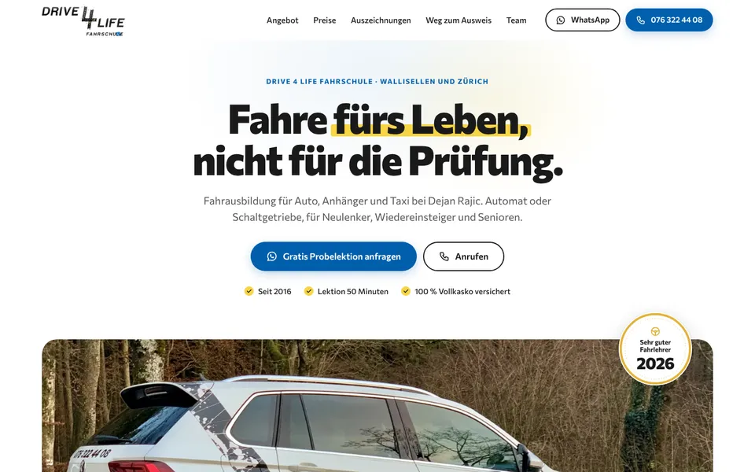
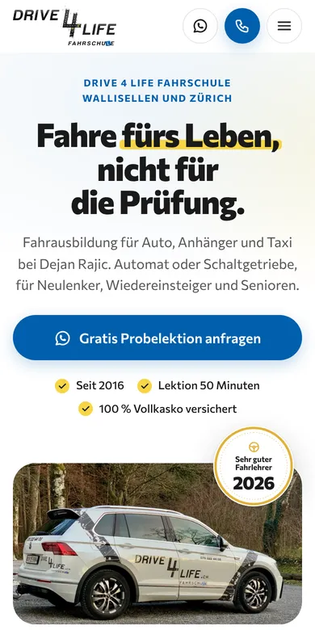

Design A
Sehr guter Fahrlehrer
Hell und freundlich: Ihr Motto als grosser Titel, darunter Ihr beklebter Tiguan als breites Panoramafoto mit dem Siegel «Sehr guter Fahrlehrer 2026» und ein gelbes Band für die kostenlose Probelektion. Danach sechs Angebotskacheln mit Ihren Fotos, die Preise in Reitern und Ihre Auszeichnungen seit 2017 als Zeitleiste, übersichtlich auch für Eltern.
- Hell
- Siegel 2026
- Preise in Reitern